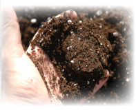
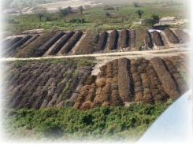
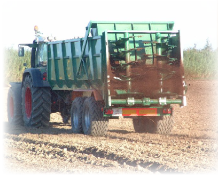
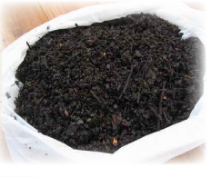
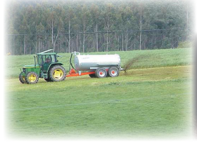

Con una dedicación de mas un siglo de historia, María José González Ramírez inició su recorrido allá por el año 1.880, el empeño y dedicación de sus comienzos fue quizás el legado más importante recibido de padres a hijos y que han trascendido en su segunda y ya tercera generación.
María José González Ramírez, como Grupo Familiar, cuenta con un equipo cualificado de personas que mantienen esa cultura heredada de trabajo, honestidad y responsabilidad que nuestras familias supieron transmitirnos y que como tercera generación mantienen con tesón e ilusión lo trasmitido de sus generaciones pasadas.
Con el paso del tiempo, la Empresa ha ido creciendo e incorporando progresivamente adelantos tecnológicos y de maquinaria que le permitían obtener y maximizar los rendimientos de sus productos.
La Filosofía de trabajo de la empresa se basa en optimizar la producción de productos de gran calidad y ofrecer un servicio directo y personalizado a sus clientes, posible gracias a su producción controlada y al carácter familiar de la Empresa.
Su objetivo principal es la gestión de un sistema de producción de compost ecológico, consiguiendo así un producto de calidad diferenciada. Llevando a cabo para ello la utilización óptima de recursos renovables.
Con un lema: “La Tierra no es una herencia de nuestros padres, si no un préstamo de nuestros hijos” (Lester Brown)
La Agricultura Ecológica recupera la cultura agrícola y campesina, manteniendo su identidad y su valorización por parte de los agricultores y del resto de la sociedad, al respetar y aprovechar en muchas ocasiones los conocimientos anteriores. Así, se mantienen y recuperan las variedades y razas autóctonas, apropiadas a las condiciones de cada zona. Se estudian y adaptan los ciclos de cultivo determinados por el clima y el suelo de cada lugar. Se aprovechan las nuevas herramientas pero haciendo un buen uso de ellas, sin desestabilizar el sistema.
    